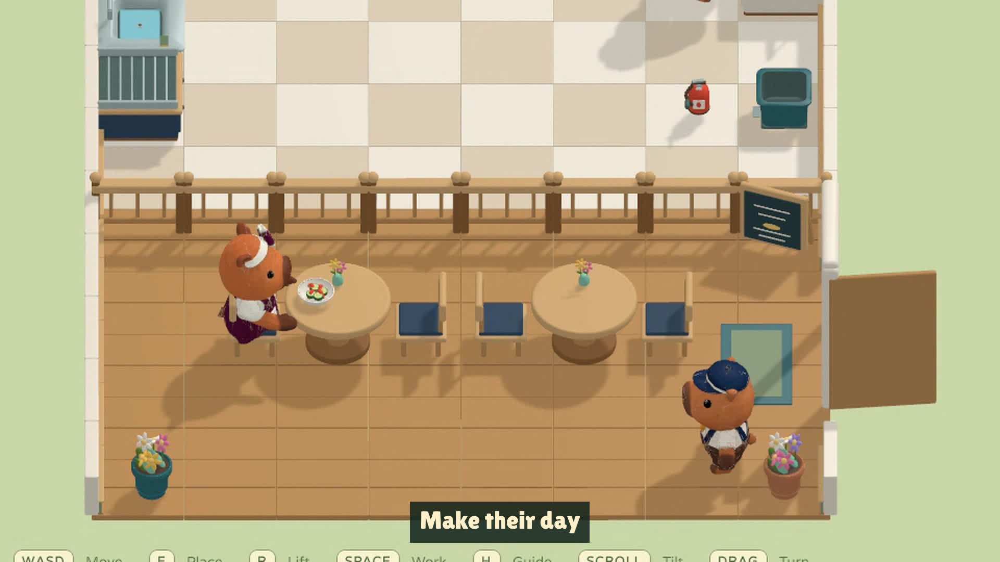
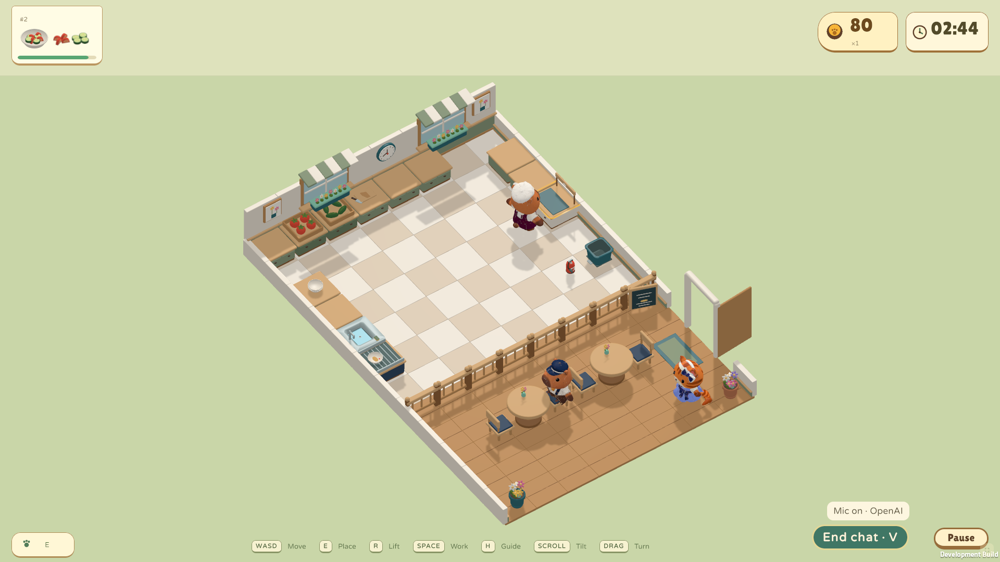
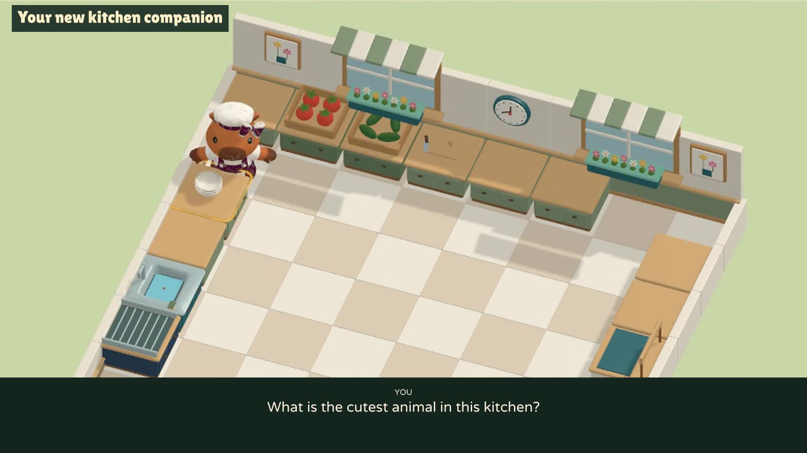

Little paws. Big appetites.
48 seconds of chopping, serving, shortcuts and a little kitchen chaos.
Open gameplay trailer ↗Creator showcase · submission draft
Little paws. Big appetites. A cozy cooking game with a capybara you can talk to while you play.

From a conversation to a café
Run a tiny animal café as a capybara, cat or dog. Chop vegetables, combine salads, simmer soup, serve guests and keep clean plates moving through four distinct kitchens. Low barriers create ingredient-throwing shortcuts, and an unattended pot can turn a calm service into a little kitchen chaos.
Bara is also an optional live voice companion. Ask what to do next, talk about your progress or enjoy a little café banter while you keep cooking. Answers use the actual kitchen state, and occasional reminders help with forgotten pots. Built through an iterative conversation with Codex, from character concepts and 3D assets to animation, gameplay, playtests and trailers.
Four kitchens. Two recipes. Three animal species.
Optional voice uses the player's own key and local helper.
These are short, reconstructed prompts distilled from the creator's requests and accepted feedback. They describe the main stages, not verbatim transcripts or a claim that each stage took one prompt. Use earlier approved outputs as references for later steps.

Approved capybara wardrobe direction, based on the C1 proportions.
Design a cozy animal cooking game called Bara Kitchen, with a capybara as the default chef. Explore a few cute directions with a big rounded head, short muzzle, dark animal eyes, tiny connected legs and simple paws. Refine the chosen version into a slightly slimmer body. Use that design as the standard for cats and dogs, with clearly different chef and customer outfits and visible accessories.
The approved C1 direction became a shared character standard and wardrobe reference.
Use the approved animal references to create the 3D cast, trying image-to-3D for the characters where useful. Build a matching kit of vegetables, dishes, tools, counters and café furniture. We need whole and chopped tomato, cucumber, carrot and mushroom, plus salad and soup. Keep one serving vessel at a consistent scale. Use warm wood, sage cabinets, soft surfaces and flowers, with worktops at paw height below the animals' heads.
Meshy character assets and reusable food and environment models were integrated into Unity.
Animate the chef walking, dashing, carrying, throwing, chopping, washing and putting out a fire. Feet should visibly step, and idle should gently lift the arms along the sides. Keep the head upright while chopping with a vertical knife. Make washing a small stroke at the plate rim. Add seated idle and eating for customers. Watch the clips on each animal and fix sleeve intersections, exaggerated motion and misplaced tools.
A shared motion set was reviewed across the capybara, cat and dog presets.
Build a playable single-player loop: collect vegetables, chop, assemble a salad or cook soup, serve a guest and wash the returned dish. Combine salad ingredients on any free counter; we do not need a salad station. Let raw and prepared food sit freely on plates, with only correct combinations becoming recipes. Tap once to work and move to cancel. An ignored pot should warn, burn and leave rubbish after extinguishing, requiring a trip to the bin.
Food state, recipe matching, finite dishes, customers and fire recovery form one continuous loop.
Draw four distinct kitchens before expanding the demo. Start with an open salad kitchen, then introduce soup and dashing around an island. Add low barriers that block walking but allow ingredients to be thrown across, then combine everything in a zigzag layout. Provide several empty worktops and a walking route to every station so one player can do everything. Give each kitchen a nearby dining area where animals arrive, sit, eat and leave.
Four kitchens introduce preparation, cooking, dashing and throws through different spatial problems.
Make the UI belong to this café: compact recipe tickets, patience bars, score and a round timer. Let the kitchen and dining area fill most of the screen. Replace large instructional popups with a simple picture guide and small progress bars over pots. Preserve bright model colors, soft shadows and clean edges. Add cooking sounds, music and cute guest reactions. Let players turn and tilt the camera to keep the action visible.
Café-themed UI, picture tutorials, sound and adjustable camera framing support exploration.
Add a small chat button so I can speak naturally with Bara while playing. Use GPT-Live and the current kitchen context to answer where to go, what to prepare and how I am doing. Give occasional gentle hints when I am idle or have forgotten a pot, and allow casual café conversation. Keep the voice soft, bright and playful. Players should enter their own API key for the session. Bara offers advice; it does not control the chef.
Live conversation combines actual game context, delegated reasoning and restrained reminders.
live_chef_server.py · chef_brain.py · Bara-Kitchen-Voice-Trailer.mp4
Play through all four kitchens and check serving, washing, failures and restarting. Make a short trailer from actual gameplay, opening and closing with the same three-second title and cute game icon. Use a diagonal camera for cooking and fire-fighting so the chef does not hide the pot. Make a second trailer showing live help, progress feedback and casual chat. End with the cutest-animal question and Bara's answer: Me! Bara, the capybara. Leave out the laugh.
Two trailers document the cooking loop and live companion, with editable captures and timelines retained.
Both trailers use recorded Unity gameplay. The voice trailer pairs real model replies with synthetic player questions and editorial captions.

48 seconds of chopping, serving, shortcuts and a little kitchen chaos.
Open gameplay trailer ↗
57 seconds of spoken help, encouragement, reminders and café banter.
Open voice trailer ↗Ready to copy
Prepared for the official showcase form, checked 15 September 2026. Short answers fit its stated limits. The kit contains this offline page, all selected images, the prompt guide and editable JSON.
Game — single-player 3D cooking demo
Yes
No other coding agent is recorded in this project's development history. Confirm before submitting.
Unity 6000.6, C#, Blender, Python/aiohttp, JavaScript, WebRTC and WebSockets. Desktop WebGL and macOS Apple silicon builds.
Game development, interactive entertainment, contextual spoken gameplay guidance and conversational game characters.
Agent-assisted game creation across art direction, 3D asset integration, animation, gameplay code, browser playtests and trailer production. Continuous, interruptible speech-to-speech conversation during gameplay, with structured kitchen context, delegated reasoning, camera-relative directions and restrained proactive reminders. OpenAI image-generation tools supported concept art and the game icon.
Codex with GPT-6 Astra (gpt-6-astra, recorded development checkpoint); GPT-Live (gpt-live-1, Marin voice) for in-game conversation; Responses API with gpt-5.4-mini for grounded gameplay reasoning. OpenAI image-generation tools for concepts/icon (exact model ID not recorded); gpt-4o-mini-tts for synthetic player questions in the voice trailer.
Meshy image-to-3D and rigging for character assets; ElevenLabs for selected music and sound effects during production. Existing CC0 foley was also used. Meshy and ElevenLabs are not called during gameplay.
I worked with Codex in small reviewable stages: animal concepts, 3D assets, shared animations, cooking systems and four kitchens. I reviewed images and clips, then refined proportions, paw-height worktops, movement, UI and camera angles. Codex implemented and tested the game, added context-aware live voice help, and captured two gameplay trailers. The repository includes an illustrated eight-step prompt guide in docs/SHOWCASE_SUBMISSION.md.
https://github.com/codersusu/game-overcooked
Leave blank. The current demo runs locally; localhost is not a public demo URL.
Clone the GitHub repository with Git LFS and run git lfs pull. Run python3 -m http.server 54114 --directory art, then open http://localhost:54114/production/gameplay-round-01/ in a desktop browser. Cooking works offline. For optional voice, follow the README to start the local Python Voice Helper, then enter your own OpenAI key in the game and allow microphone access. API use is billed to the player; no developer key is included.
Bara Kitchen
Little paws. Big appetites. A cozy cooking game with a capybara you can talk to while you play.
Run a tiny animal café as a capybara, cat or dog. Chop vegetables, combine salads, simmer soup, serve guests and keep clean plates moving through four distinct kitchens. Low barriers create ingredient-throwing shortcuts, and an unattended pot can turn a calm service into a little kitchen chaos. Bara is also an optional live voice companion. Ask what to do next, talk about your progress or enjoy a little café banter while you keep cooking. Answers use the actual kitchen state, and occasional reminders help with forgotten pots. Built through an iterative conversation with Codex, from character concepts and 3D assets to animation, gameplay, playtests and trailers.
https://raw.githubusercontent.com/codersusu/game-overcooked/main/art/showcase/round-01/images/cover.png